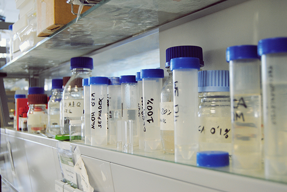

Publicaciones en revistas científicas
1.- |
Carvajal, F., Palma, F., Jiménez-Muñoz, R., Jamilena, M. Pulido, A., Garrido, D. (2017) Unravelling the role of abscisic acid in chilling tolerance of zucchini during postharvest cold storage. Postharvest Biology and Technology, 133, pp. 26-35. |
2.- |
Valenzuela, J.L., Manzano, S., Palma, F., Carvajal, F., Garrido D., Jamilena, M. (2017) Oxidative stress associated with chilling injury in immature fruit: Postharvest technological and biotechnological solutions. International Journal of Molecular Sciences, 18, 1467; doi:10.3390/ijms18071467. |
3.- |
Megías-, Zoraida Mª; Manzano-Medina, Susana; Martínez-Martínez, Cecilia; García, Alicia; Aguado , Encarnación; Garrido-Garrido, M Dolores; Rebolloso-Fuentes, Maria Del Mar; Valenzuela-Manjon-Cabeza, Juan Luis; Jamilena-Quesada, Manuel. (2017). Postharvest cold tolerance in summer squash and its association with reduced cold-induced ethylene production. Euphytica (Wageningen),213(1), pp.9. |
4.- |
Rosales-López, Raquel. (2016).Incidence and etiology of postharvest diseases of fresh fruit of date palm (Phoenix dactylifera L.) in the grove of Elx (Spain). Phytopathologia Mediterranea, 55(3), pp. 391-400. |
5.- |
Megías-, Zoraida Mª; Martínez-Martínez, Cecilia; Manzano-Medina, Susana; García, Alicia; Rebolloso-Fuentes, Maria Del Mar; Valenzuela-Manjon-Cabeza, Juan Luis; Garrido-Garrido, M Dolores; Jamilena-Quesada, Manuel. (2016).Ethylene biosynthesis and signalling elements involved in chilling injury and other postharvest quality traits in the non-climacteric fruit of zucchini (Cucurbita pepo). Postharvest Biology and Technology, 113, pp. 48-57. |
6.-
|
Palma-Martín, Francisco; Carvajal-Moreno, Fátima; Jamilena-Quesada, Manuel; Garrido-Garrido, M Dolores. (2016). Putrescine treatment increases the antioxidant response and carbohydrate content in zucchini fruit stored at low temperature. Postharvest Biology and Technology, pp.68-70. |
7.- |
Rosales-López, Raquel. (2016).Short-Term Exposure to High CO2 and O2 Atmospheres to Inhibit Postharvest Gray Mold of Pomegranate Fruit. Plant disease, 100(2), pp. 424-430. |
8.- |
Rosales-López, Raquel. (2016). Low Temperature and Short-Term High-CO2 Treatment in Postharvest Storage of Table Grapes at Two Maturity Stages: Effects on Transcriptome Profiling. Frontiers in Plant Science, 7(1020), pp. 1-16. |
9.- |
Megías-, Zoraida Mª; Martínez-Martínez, Cecilia; Manzano-Medina, Susana; Garcia, Alicia; Rebolloso-Fuentes, Maria Del Mar; Garrido-Garrido, M Dolores; Valenzuela-Manjon-Cabeza, Juan Luis; Jamilena-Quesada, Manuel. (2015) Individual Shrink Wrapping of Zucchini Fruit Improves Postharvest Chilling Tolerance Associated with a Reduction in Ethylene Production and Oxidative Stress Metabolites. PloS One, 10(7) Página inicial: e0133058 |
10.- |
Carvajal-Moreno, Fátima; Palma-Martín, Francisco; Jamilena-Quesada, Manuel; Garrido-Garrido, M Dolores. (2015). Preconditioning treatment induces chilling tolerance in zucchini fruit improving different physiological mechanisms against cold injury. Annals of Applied Biology, 166(2), pp. 340-354. |
11.- |
Megías-, Zoraida Mª; Barrera-Romero, Alejandro Jose; Manzano-Medina, Susana; Martínez-Martínez, Cecilia; Garrido-Garrido, M Dolores; Valenzuela-Manjon-Cabeza, Juan Luis; Jamilena-Quesada, Manuel. (2015). Physical and chemical treatments enhancing postharvest fruit quality in zucchini. Acta Horticulturae, 1091, pp.141-146. |
12.- |
Megías-, Zoraida Mª; Manzano-Medina, Susana; Martínez-Martínez, Cecilia; Barrera-Romero, Alejandro Jose; Garrido-Garrido, M Dolores; Valenzuela-Manjon-Cabeza, Juan Luis; Jamilena-Quesada, Manuel. (2015). Effects of 1-mcp on different postharvest quality parameters in zucchini. Acta Horticulturae, 1091, pp. 83-89. |
13.- |
Rosales-López, Raquel. (2015). Effects of high CO2 levels on fermentation, peroxidation and cellular water stress in Fragaria vesca stored at low temperature in conditions of unlimited O2. Journal of Agricultural and Food Chemistry, 63, pp-761-768. |
14.- |
Rosales-López, Raquel. (2015).Differential regulation of dehydrin expression and trehalose levels in Cardinal table grape skin by low temperature and high CO2. Journal of Plant Physiology, 179, pp.1-11. |
15.- |
Palma-Martín, Francisco; Carvajal-Moreno, Fátima; Ramos-Clavero, Jose M; Jamilena-Quesada, Manuel; Garrido-Garrido, M Dolores. (2015). Effect of putrescine application on maintenance of zucchini fruit quality during cold storage: Contribution of GABA shunt and other related nitrogen metabolites. Postharvest Biology and Technology, 99, pp. 131-140. |
16.- |
Carvajal-Moreno, Fátima; Palma-Martín, Francisco; Jamilena-Quesada, Manuel; Garrido-Garrido, M Dolores. (2015). Cell wall metabolism and chilling injury during postharvest cold storage in zucchini fruit. Postharvest Biology and Technology, 108, pp. 68-77. |
17.- |
Rosales-López, Raquel; Palma-Martín, Francisco. (2015). CO2-driven changes in energy and fermentative metabolism in harvested strawberries. Postharvest Biology and Technology, 110, pp. 33-39. |
18.- |
Martínez-Martínez, Cecilia; Manzano-Medina, Susana; Megías-, Zoraida Mª; Barrera-Romero, Alejandro Jose; Boualem, Adnane; Garrido-Garrido, M Dolores; BENDAHMANE-, ABDELHAFID; Jamilena-Quesada, Manuel. (2014). Molecular and functional characterization of CpACS27A gene reveals its involvement in monoecy instability and other associated traits in squash (Cucurbita pepo L.). Planta, 239(6), PP. 1201-1215. |
19.- |
Palma-Martín, Francisco; López-Gómez, Miguel; Tejera-García, Noel Amaurys; Lluch-Pla, Carmen. (2014). Involvement of abscisic acid in the response of Medicago sativa plantsin symbiosis with Sinorhizobium meliloti to salinity. Plant science, pp.16-24. |
20.- |
García-Garijo, Amaranta; Tejera-García, Noel Amaurys; Lluch-Pla, Carmen; Palma-Martín, Francisco. (2014). Metabolic responses in root nodules of Phaseolus vulgaris and Vicia sativa exposed to the imazamox herbicide. Pesticide Biochemistry and Physiology, 111, pp. 19-23. |
21.- |
Palma-Martín, Francisco; Carvajal-Moreno, Fátima; Jamilena-Quesada, Manuel; Garrido-Garrido, M Dolores. (2014). Contribution of polyamines and other related metabolites to the maintenance of zucchini fruit quality during cold storage. Plant Physiology and Biochemistry, 82, pp. 161-171 |
22.- |
Martínez-Martínez, Cecilia; Manzano-Medina, Susana; Megías-, Zoraida Mª; Garrido-Garrido, M Dolores; PICÓ-SIRVENT, MARÍA BELÉN; Jamilena-Quesada, Manuel. (2014). Sources of parthenocarpy for Zucchini breeding: relationship with ethylene production and sensitivity. Euphytica (Wageningen), 200(3), pp. 349-362 |
23.- |
Megías-, Zoraida Mª; Martínez-Martínez, Cecilia; Manzano-Medina, Susana; Barrera-Romero, Alejandro Jose; Rosales-López, Raquel; Valenzuela-Manjon-Cabeza, Juan Luis; Garrido-Garrido, M Dolores; Jamilena-Quesada, Manuel. (2014). Cold-induced ethylene in relation to chilling injury and chilling sensitivity in the non-climacteric fruit of zucchini (Cucurbita pepo L.) LWT-Food Science and Technology, 57(1), pp. 194-199. |
24.- |
Rosales-López, Raquel. (2014). The crucial role of U- and K-segments in the in vitro functionality of Vitis vinifera dehydrin DHN1a. Phytochemistry, 108, pp. 17-25. |
25.- |
Carvajal-Moreno, Fátima; Garrido-Garrido, M Dolores; Jamilena-Quesada, Manuel; Rosales-López, Raquel. (2014). Cloning and characterisation of a putative pollen-specific polygalacturonase gene (CpPG1) differentially regulated during pollen development in zucchini (Cucurbita pepo L.). Plant Biology, 16(2), pp. 457-466. |
26.- |
Palma-Martín, Francisco; Carvajal-Moreno, Fátima; Lluch-Pla, Carmen; Jamilena-Quesada, Manuel; Garrido-Garrido, M Dolores. (2014). Changes in carbohydrate content in zucchini fruit (Cucurbita pepo L.) under low temperature stress. Plant Science, 217, pp. 78-86. |
27.- |
Rosales-López, Raquel. (2013). Molecular analysis of the improvement in rachis quality by high CO2 levels in table grapes stored at low temperature. Postharvest Biology and Technology, 77, 50-58. |
28.- |
Traverso JA; Pulido-Regadera, Amada; Rodríguez-García, María Isabel; Alché-Ramírez, Juan De Dios. (2013). Thiol-based redox regulation in sexual plant reproduction: new insights and perspectives. Frontiers in Plant Science, 4(465), pp.1-14. |
29.- |
Manzano-Medina, Susana; Martínez-Martínez, Cecilia; Megías-, Zoraida Mª; Garrido-Garrido, M Dolores; Jamilena-Quesada, Manuel (2013). Involvement of ethylene biosynthesis and signalling in the transition from male to female flowering in the monoecious Cucurbita pepo. Journal of Plant Growth Regulation, 32, pp. 789-798. |
30.- |
(2013). NADP-malic enzyme and glutathione reductase contribute to glutathione regeneration in Fragaria vesca fruit treated with protective high CO2 concentrations. Postharvest Biology and Technology, 86, pp. 431-436. |
31.- |
Palma-Martín, Francisco; Tejera-García, Noel Amaurys; Lluch-Pla, Carmen. (2013). Nodule carbohydrate metabolism and polyols involvement in the response of Medicago sativa to salt stress. Environmental And Experimental Botany, 85, pp. 43-49. |
32.- |
Martínez-Martínez, Cecilia; Manzano-Medina, Susana; Megías-, Zoraida Mª; Garrido-Garrido, M Dolores; PICÓ-SIRVENT, MARÍA BELÉN; Jamilena-Quesada, Manuel. (2013). Involvement of ethylene biosynthesis and signalling in fruit set and early fruit development in zucchini squash (Cucurbita pepo L.). |
33.- |
Palma-Martín, Francisco; López-Gómez, Miguel; Tejera-García, Noel Amaurys; Lluch-Pla, Carmen. (2013). Salicylic acid improves the salinity tolerance of Medicago sativa in symbiosis with Sinorhizobium meliloti by preventing nitrogen fixation inhibition. Plant Science, 208, pp. 75-82. |
34.- |
García-Garijo, Amaranta; Palma-Martín, Francisco; Lluch-Pla, Carmen; Tejera-García, Noel Amaurys. (2013). Physiological and biochemical responses of common vetch to the imazamox accumulation. Plant Physiology and Biochemistry, 73, pp. 221-225. |
35.- |
García-Garijo, Amaranta; Palma-Martín, Francisco; Iribarne-Martinez, Carmen; Lluch-Pla, Carmen; Tejera-García, Noel Amaurys. (2012). Alterations induced by imazamox on acetohydroxyacid synthase activity of common bean (Phaseolus vulgaris) depend on leaf position. Pesticide Biochemistry and Physiology, 104, pp. 72-76. |
36.- |
Rosales-López, Raquel. (2012). Unraveling the roles of CBF1, CBF4 and dehydrin 1 genes in the response of table grapes to high CO2 levels and low temperature. Journal of Plant Physiology, 169, pp. 744-748. |
37.- |
Rosales-López, Raquel; Burns-, Jacqueline K. (2011). Phytohormone changes and carbohydrate status in sweet orange fruit from huanglongbing-infected trees. Journal of Plant Growth Regulation. |
38.- |
Carvajal-Moreno, Fátima; Martínez-Martínez, Cecilia; Jamilena-Quesada, Manuel; Garrido-Garrido, M Dolores. (2011). Differential response of zucchini varieties to low storage temperatura. Scientia Horticulturae, 130(1), pp.90-96. |
39.- |
Palma-Martín, Francisco; Tejera-García, Noel Amaurys; Herrera-Cervera, Jose Antonio. (2011). Effect of salinity on nodulation, nitrogen fixation and growth of common bean (Phaseolus vulgaris) inoculated with rhizobial strains isolated from the Haouz region of Morocco. Symbiosis, 55, pp. 69-75. |
40.- |
Manzano-Medina, Susana; Martínez-Martínez, Cecilia; Megías-, Zoraida Mª; Gomez-Jimenez De Cisneros, Pedro; Garrido-Garrido, M Dolores; Jamilena-Quesada, Manuel. (2011).The role of ethylene and brassinosteroids in the control of sex expression and flower development in cucurbita pepo. Plant Growth Regulation, 65(2), pp. 213-221. |
41.- |
Pulido-Regadera, Amada; Laufs-,Patrick. (2010). Coordination of developmental processess by small rnas during leaf development. Journal of Experimental Botany, pp. 1-15. |
42.- |
Manzano-Medina, Susana; Martínez-Martínez, Cecilia; Gomez-Jimenez De Cisneros, Pedro; Garrido-Garrido, M Dolores; Jamilena-Quesada, Manuel. (2010). Cloning and characterisation of two ctr1-like genes in cucurbita pepo: regulation of their expression during male and female flower development. Sexual Plant Reproduction, 23(4), pp. 301-313 |
43.- |
Manzano-Medina, Susana; Martínez-Martínez, Cecilia; Garrido-Garrido, M Dolores; Gomez-Jimenez De Cisneros, Pedro; Jamilena-Quesada, Manuel. (2010). A major gene conferring reduced ethylene sensitivity and maleness in cucurbita pepo. Journal of Plant Growth Regulation, 29, pp. 73-80. |
44.- |
Palma-Martín, Francisco; Lluch-Pla, Carmen; Iribarne-Martinez, Carmen; Garcia-Garrido, Jose Manuel; Tejera-García, Noel Amaurys. (2009). Combined effect of salicylic acid and salinity on some antioxidant activities, oxidative stress and metabolites accumulation in phaseolus vulgaris. Plant Growth Regulation, 58, pp. 307-316. |
45.- |
Bedhomme-,M; Mathieu-,C; Pulido-Regadera, Amada; Henry & Bergounioux-,Y. (2009). Arabidopsis monomeric g-proteins, markers of early and late events in cell differentiation. The International Journal of Developmental Biology, pp. 177-185. |
46.- |
Garrido-Garrido, M Dolores; Rosales-López, Raquel; Gomez-Jimenez De Cisneros, Pedro; Jamilena-Quesada, Manuel. (2009). Hormonal control of floral abscission in zucchini squash (Cucurbita pepo). Plant Growth Regulation, 58(1), pp. 1-14. |
47.- |
Garrido-Garrido, M Dolores. (2009). A major gene conferring reduced ethylene sensivity and maleness in cucurbita pepo. Journal of Plant Growth Regulation, pp.1-10. |
48.- |
Pulido-Regadera, Amada; Bakos-,F; Devic-,M; Barnabas-,Beata; Olmedilla-Arnal, Adela. (2009). Hvpg1 and eca1: two genes activated transcriptionally in the transition of barley microspore from the gametophytic to the embryogenic pathway. Plant Cell Reports, pp.551-559. |
49.- |
Garrido-Garrido, M Dolores; Ramos-Clavero, Jose M; Rosales-López, Raquel; Sabouni-, Ibrahim. (2008).Comparing the benefits between pesticides and ethylene treatments in reducing olive moth population numbers and damage. International Journal of Pest Management, 54(4), pp. 327-331. |
50.- |
Ramos-Clavero, Pedro; Rosales-López, Raquel; Sabouni-, Ibrahim; Garrido-Garrido, M Dolores; Ramos-Clavero, Jose M. (2008). Crop losses due to olive moth mediated by ethylene. Pest Management Science, 64(7), pp. 720-724. |
51.- |
Manzano-Medina, Susana; Ávalos-,Eugenio; Dominguez-,Victor Jesús; Garrido-Garrido, M Dolores; Gomez-Jimenez De Cisneros, Pedro; Jamilena-Quesada, Manuel. (2008).Un gen recesivo que confiere insensibilidad al etileno y androecia en cucúrbita pepo. Actas de Horticultura de la Sociedad Española de Ciencias Hortícolas, 51, pp. 199-200. |
52.- |
Bein-,T; Pulido-Regadera, Amada; Vialette-,A; Nikovics-,K; Morin-,H; Hay-,A; Johansen-,Ie; Tsiantis-,M; Lauf'S-,B. (2008). A conserved molecular framework for compund leaf development. Science, pp. 1835-1839. |
53.- |
Payán-Amate, Maria Del Carmen; Peñaranda-Ruíz, Ascension; Manzano-Medina, Susana; Garrido-Garrido, M. Dolores; Jamilena-Quesada, Manuel; Gomez-Jimenez De Cisneros, Pedro. (2008). Estadios previos de la formación del fruto de calabacín muestran un patrón específico de expresión de los genes receptores de etileno cup-etr1 y cup-ers1. Actas de Horticultura de la Sociedad Española de Ciencias Hortícolas, pp. 171-172. |
54.- |
Garrido-Garrido, M Dolores; Ramos-Clavero, Jose M; Rosales-López, Raquel; Sabouni-, Ibrahim. (2008). The use of ethylene diffusers is comparable to treatments with sprayed ethylene to reduce the damage caused by the olive moth ( prays oleae bern.). Journal of Pest Science, PP. 1-5. |